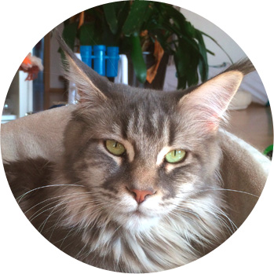
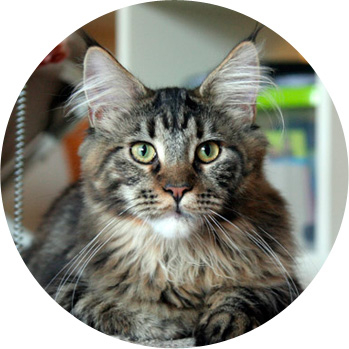

Unsere Katzen
Int. Champion Xilly-Dee of Moi Mapache blue-tabby/cl.
Stammbaum
http://pawpeds.com/db/?a=p&ids=3:1093384;2:1093380&g=4&p=mco&date=iso&o=ajgrepAusstellungserfolge
- 07.12.2013 - 5.CACIB – Int.Champion
- 07.12.2013 - 4.CACIB
- 28.09.2013 - 3.CACIB nominiert für Best in Show-Best in Colour
- 28.09.2013 - 2.CACIB
- 07.09.2013 - 1.CACIB
- 07.09.2013 - 3.CAC – Champion
- 22.06.2013 - 2.CAC nominiert für Best in Show
- 22.06.2013 - 1.CAC
- 02.02.2013 - CACJ nominiert für Best in Show

VunElvdiek's Hanna black-torbie/cl.
Stammbaum
http://pawpeds.com/db/?a=p&id=1172527&g=4&p=mco&date=iso&o=ajgrepAusstellungserfolge
- 05.04.2014 - 2. CAC
- 05.04.2014 - 1. CAC
- 01.02.2014 - CACJ nominiert für Best in Show
- 07.12.2013 - CACP